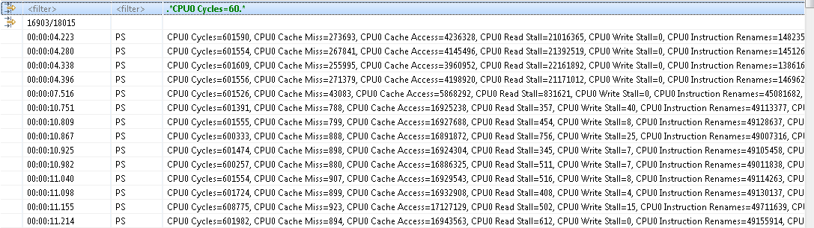

Filtering an Event
When a filtering condition is entered in the head row, the table will clear all events and fill itself with matching events as they are found from the beginning of the trace.
A status row will be displayed before and after the matching events, dynamically showing how many matching events were found and how many events were processed so far. Once the filtering is completed, the status row icon in the left margin will change from a stop to a filter icon.

Press ESC to stop an ongoing filtering. In this case the status row icon will remain as a 'stop' icon to indicate that not all events were processed.
Press DEL or right-click on the table and select Clear Filters from the context menu to clear the header row and remove the filtering. All trace events will be now shown in the table. Note that the currently selected event will remain selected even after the filter is removed.
You can also search on the subset of filtered events by toggling the header row to the Search Bar while a filter is applied. Searching and filtering conditions are independent of each other.